WEB / 01
Frontend development
Building responsive, usable websites with careful layouts and interactive details.

DION / DEV PORTFOLIO GitHub ↗Hey, I'm Dion Agung Kadang. I study Informatics and build full-stack web apps, useful tools, thoughtful interfaces—and the occasional browser game.
// currently in build mode const dion = { role: 'Developer', focus: 'Web & Software', mindset: 'Keep improving' };
Some frames from my own camera roll. Move the cursor across a photo to explore the light, or click to view it.
Three original photos · cursor-follow spotlight · openable gallery
Not a wall of random logos. These are the technologies and areas I actively work with or study.
Building responsive, usable websites with careful layouts and interactive details.
Working with application logic, server-side programming, routes and integrations.
Structuring relational data and analyzing datasets to support real applications.
Collaborative workflows, version control, debugging and developer environments.
Machine learning, software architecture, security, accessible UI/UX.
Real canvas-based JavaScript games. Choose a mode, press Start, use WASD or the arrow keys, and play.
Commit Quest never makes up your real contribution count: if its source is unavailable, the interface clearly switches to practice mode. GitHub contribution data refreshes when the page is opened or when Refresh is pressed.
A contribution calendar synced from GitHub plus your latest public activity. Data depends on GitHub availability.
My places around the web. Some external profiles were taken from an earlier README—please confirm they still belong to you.